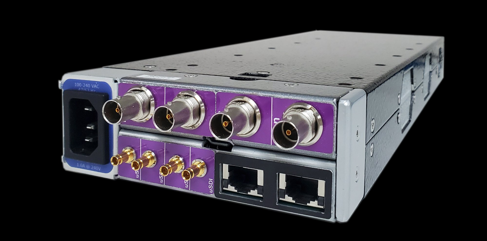
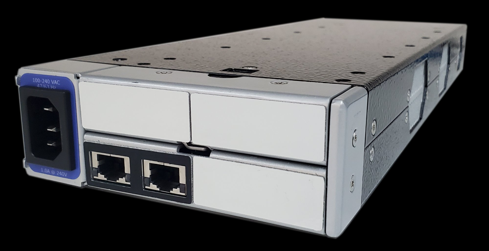
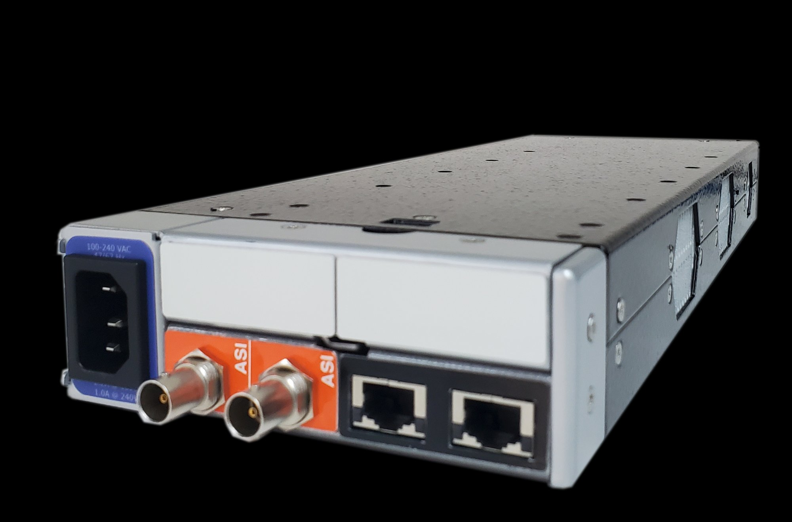

SRT uses secure streams and easy firewall traversal to optimize streaming performance and deliver high-quality video over even the most unreliable networks. End-to-end 128/256 bit AES encryption ensures content protection.
Supports UDP, RTP, SRT (Encrypted). In turn-around mode, the stream passes transparently. In standard multiplexing mode, service filtering and TS conversion are supported.

MPEG 2 RTP v2 (1-185Mbps), UDP (1-185Mbps), SRT (1-60Mbps)

IP: RTP v2 (1-185Mbps), UDP (1-185Mbps), SRT (1-60Mbps). ASI: DVB-ASI up to 185Mbps in / 210Mbps out.
PAT / CAT / PMT
SDT / NIT / EIT / TDT/TOT
MGT (TVCT) / STT / RRT / EIT 0-3